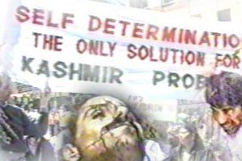

|
Hacked By Mr_Sweet |

|
mrsweet@puckoff.com |
|

Eight die in held Kashmir violence
SRINAGAR (Occupied Kashmir), Oct 5: Eight people have been killed in
Earlier on Monday evening, paramilitary forces shot dead two militants
at
Mujahideen also shot dead a civilian near Srinagar's Habakadal area and
three
In another clash, soldiers shot dead a freedom fighter at Palvas area of
Doda
Two killed in Indian shelling
MUZAFFARABAD, Oct 4: At least two children were killed while five others,
Sources said the cross-border shelling was continuing all along the Line
of
They said Indian forces targeted Kel sector, more than 155 kilometres
|
|
Mr_Sweet , AntiChrist , Devil-C , cynic , 139_r00ted ,
FUBY , v00d00 , McIntyre , ULG ,
|